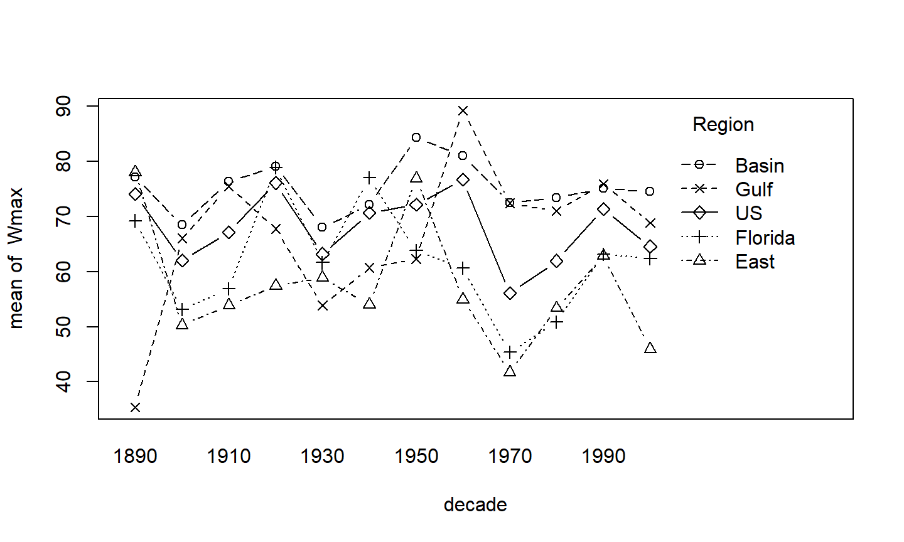
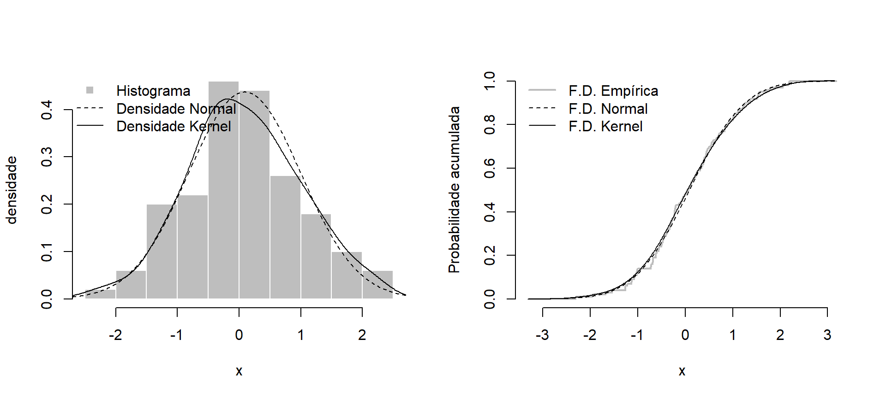

Gráficos Básicos
gráficos de barra
gráficos de linha / interação
gráficos lado a lado
histograma, linhas
Algumas opções para customizar o seu gráfico
Gráficos 3D
28 de março de 2018
Gráficos Básicos
gráficos de barra
gráficos de linha / interação
gráficos lado a lado
histograma, linhas
Algumas opções para customizar o seu gráfico
Gráficos 3D
A função básica para fazer um gráfico no R é o plot().
Os primeiros argumentos serão os pontos a serem plotados.
Em seguida, podemos especificar algumas opções como:
os limites dos eixos com xlim ou ylim;
usar a escala logarítmica com log="y";
o tipo de linha com lty, o tipo de símbolo para os pontos com pch e a cor com col.
Depois de fazer o gráfico básico, podemos adicionar elementos como:
linhas usando o comando abline();
curvas com o comando lines();
pontos com o comando points();
polígonos com o comando polygon();
legenda com o comando legend().
StormMax = read.table("../datasets/extremedatasince1899.csv", header=T, sep=",")
attach(StormMax)
table( trunc(Yr/10)*10 )[-1]
## ## 1900 1910 1920 1930 1940 1950 1960 1970 1980 1990 2000 ## 183 144 123 204 191 199 179 186 178 191 212
barplot( table( trunc(Yr/10)*10 )[-1] )
Olhe as opções dos argumentos da função barplot() no help.
Refaça o gráfico anterior alterando:
cor das barras;
título e nome dos eixos;
adicione uma linha com o número médio de ciclones por década.
decade = trunc(Yr/10)*10 interaction.plot(decade, Region, Wmax, type="b", pch=1:5)

A função interaction.plot faz na verdade, o gráfico de uma estatística descritiva (default é a média) de uma variável resposta (numérica) para as interações de duas variáveis categóricas.
O primeiro argumento é x.factor para a variável categórica no eixo x;
O segundo argumento é trace.factor com as categorias para as linhas;
O terceiro argumento é response com a variável resposta.
No gráfico anterior, escolhemos type="b" para plotar os pontos e linhas entre as observações, e escolhemos os símbolos de 1:5 para os pontos de diferentes categorias.
Outros símbolos (de 1 a 20):
Olhe as opções dos argumentos da função interaction.plot() no help.
Refaça o gráfico acima alterando:
símbolos, cor e tipo das linhas;
título e nome dos eixos;
plote a velocidade máxima dos ciclones da década, ao invés da velocidade média.

set.seed(123)
x = rnorm(100) # gerando amostra
par(mfrow=c(1,2)) # plotar com 1 linha e 2 colunas
## grafico 1: histograma
hist(x, xlab="x", ylab="densidade", main="", col="grey", border="white", probability=T)
# adicionar linhas da densidade (normal com estimadores de momentos)
u = seq(min(x)-1, max(x)+1, by=.01)
lines(u, dnorm(u,mean(x),sd(x)), lty=2)
# densidade estimada com kernel da normal
d = density(x)
lines(d$x, d$y)
# adicionar legenda
legend("topleft", legend=c("Histograma","Densidade Normal", "Densidade Kernel"),
col=c("grey","black","black"), lwd=c(NA,1,1), lty=c(NA,2,1),
pch=c(15,NA,NA), bty="n")
## grafico 2: função de distribuição empírica
F.empirica = function(y){
mean(x<=y)
}
plot(u, Vectorize(F.empirica)(u), type="s", lwd=2, col="grey",
xlab="x", ylab="Probabilidade acumulada", main="", axes=FALSE)
axis(1); axis(2) # adicionar eixos
lines(d$x, cumsum(d$y)*diff(d$x)[1]) # f.d. kernel
lines(u, pnorm(u,mean(x),sd(x)), lty=2) # f.d. normal
# adicionar legenda
legend("topleft", c("F.D. Empírica", "F.D. Normal", "F.D. Kernel"),
col=c("grey","black","black"), lwd=c(2,1,1), lty=c(1,2,1), bty="n")
# selecionando ciclones que ocorreram após 1977 na região 'Basin' StormMax.Basin = subset(StormMax, (Region=="Basin")&(Yr>1977)) attach(StormMax.Basin)
## The following objects are masked from StormMax: ## ## nao, Region, soi, split, sst, sstmda, sun, Wmax, Yr
boxplot(Wmax ~ as.factor(Yr), xlab="Ano", ylab="Velocidade (nós)", col="grey")
Para objetos do tipo lm, a função plot() retorna alguns gráficos de diagnóstico do modelo:
Para ver o help específico para esse caso, usar ?plot.lm
# regressão linear entre velocidade do vento e ano model = lm(Wmax ~ Yr) par(mfrow=c(2,2)) plot(model)
Para visualizar como fazer gráficos 3D, vamos considerar uma distribuição normal bivariada.
A densidade de uma normal bivariada com médias zero e variâncias um é dada por:
\[f(x,y) = \frac{1}{2\pi\sqrt{1-\rho^2}} \exp\left( -\frac{1}{2(1-\rho^2)}[x^2 + y^2 - 2\rho x y] \right) \qquad \forall x,y \in \mathbb{R}^2 \]
binorm = function(x1,x2,r=0){
exp( -(x1^2 + x2^2 - 2*r*x1*x2)/( 2*(1-r^2) ) )/( 2*pi*sqrt(1-r^2) )
}
x = y = seq(-2.5, 2.5, by=.25)
z = outer(x, y, function(u,v) binorm(u,v,r=.4))
## para escolher as cores
# install.packages("RColorBrewer")
require(RColorBrewer)
gray.col = gray.colors(n=100, start=0, end=1)
par(mfrow=c(1,2))
# gráfico 1: curva de níveis
image(x, y, z, col=rev(gray.col))
contour(x, y, z, add=TRUE)
# grafico 2: superfície 3D
persp(x, y, z)
persp(x, y, z, theta=210, col=gray.col[45], shade=TRUE)
Veja as documentações para as funções utilizadas nos gráficos anteriores.
Refaça os gráficos alterando:
parâmetro de correlação da normal;
quantidade de pontos para criar os vetores x e y;
escala de cores (use o comando display.brewer.all() ou entre no site http://www.colorbrewer.org para ver mais cores).